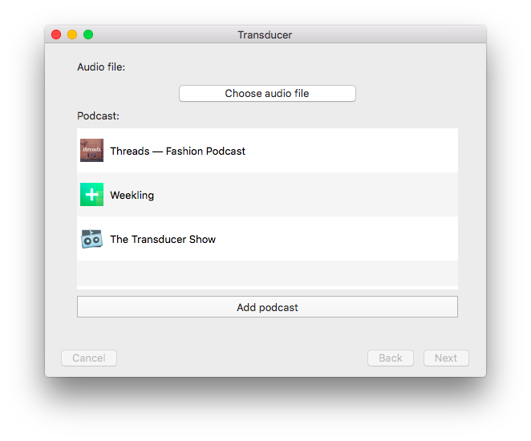
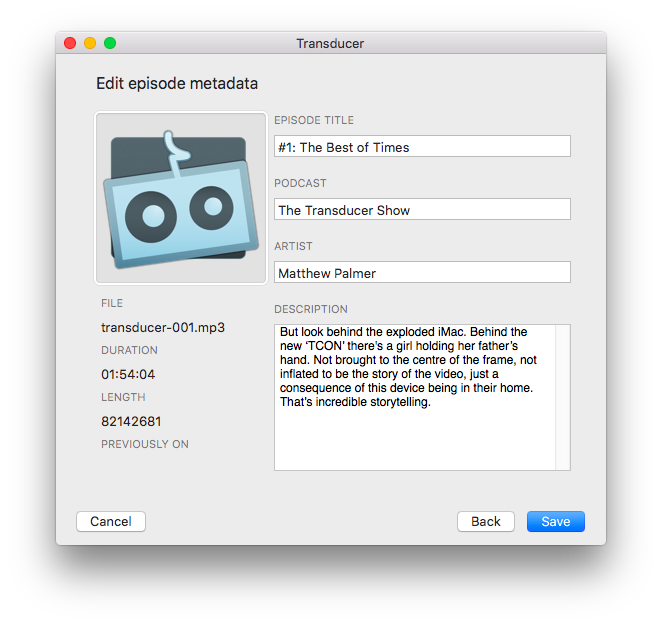

You have to go through some dumb 💩 to post a podcast. Transducer’s a Mac app that makes uploading and publishing your podcast a lot easier.
With Transducer, here's what my workflow looks like:
- Choose the audio file I want to post
- Choose the podcast I’m posting
- Set the episode’s title and description
- Choose where I want to host the file (Libsyn or SoundCloud)
- Click upload
(Bonus: Transducer also lets you run custom scripts—I use this to automatically create a new entry in my podcast’s RSS feed.)
Ever had a nerd email you about missing MP3 ID3 tags? (Don’t know what those acronyms are?) Get those metadata weirdos off your back—Transducer handles it all for you.
A bunch of other small points to convince you to try out the app:
- Run custom scripts after your show’s uploaded, like automatically creating a new Wordpress post or RSS feed entry for the episode
- Transducer works with any existing SoundCloud or Libsyn account, so you don’t need to migrate your show
- Works with MP3 files
- All the info you need for your RSS feed is right there, ready to be copy-and-pasted
- Hate when you forget the episode number when you go to write the title? Transducer shows you what last week’s episode was, so you’ll never forget again